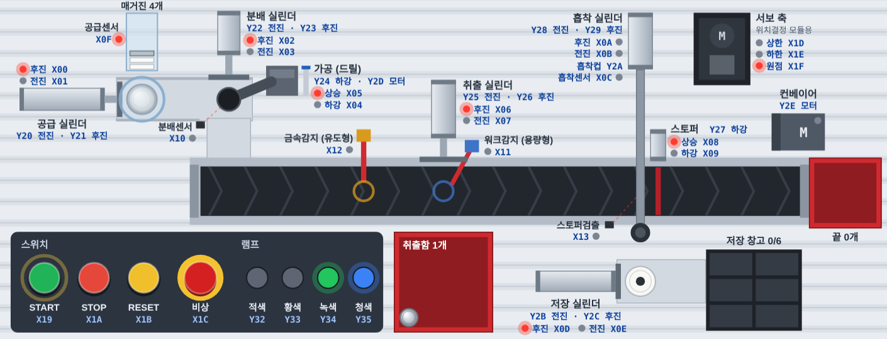

센서·스위치 27개, 솔레노이드·모터·램프 19개예요. 외우지 말고 여기서 찾아보세요. 시뮬레이터의 가상 설비도 이 번호 그대로 움직여요.
| 주소 | 설명 |
|---|
| 주소 | 설명 |
|---|
출력(Y)으로 실린더를 움직이고, 끝까지 갔는지는 그 실린더의 센서(X)로 확인해요. 짝으로 외우면 번호가 덜 헷갈려요.
| 부분 | 출력 (움직이기) | 입력 (확인하기) | 밸브 |
|---|---|---|---|
| 공급 | Y20 전진 · Y21 후진 | X00 후진 · X01 전진 · X0F 매거진 자재 | 더블 |
| 가공 (드릴) | Y24 하강 · Y2D 드릴 모터 | X04 하강 · X05 상승 | 싱글 |
| 분배 | Y22 전진 · Y23 후진 | X02 후진 · X03 전진 · X10 분배 위치 자재 | 더블 |
| 컨베이어 | Y2E 모터 | X12 금속감지 · X11 워크감지 | — |
| 취출 | Y25 전진 · Y26 후진 | X06 후진 · X07 전진 | 더블 |
| 스토퍼 | Y27 하강 | X08 상승 · X09 하강 · X13 자재 도착 | 싱글 |
| 흡착 | Y28 전진 · Y29 후진 · Y2A 흡착컵 | X0A 후진 · X0B 전진 · X0C 흡착 확인 | 더블 + 싱글 |
| 저장 | Y2B 전진 · Y2C 후진 | X0D 후진 · X0E 전진 | 더블 |
| 조작 · 램프 | Y32 적 · Y33 황 · Y34 녹 · Y35 청 | X19 START · X1A STOP · X1B RESET · X1C 비상 | — |
밸브가 마지막 방향을 기억해요. Y20을 잠깐만 켜도 끝까지 전진하고, Y21을 줄 때까지 그대로 있어요. 그래서 정지 버튼으로 출력을 끊어도 하던 행정은 끝까지 가요.
켜 있는 동안만 움직이고, 끄면 스프링으로 돌아와요. Y24를 끄면 드릴이 올라가고, Y27을 끄면 스토퍼가 올라와서 자재를 막아요. Y2A를 끄면 흡착컵이 자재를 놓아요.
공급·분배·취출·흡착·저장은 후진 센서가 앞 번호(X00 후진, X01 전진)예요. 가공은 하강이 앞 번호(X04 하강, X05 상승), 스토퍼는 상승이 앞 번호(X08 상승, X09 하강)라서 헷갈리기 쉬워요.
시뮬레이터의 가상 설비를 위에서 본 그림이에요. 아래쪽이 조작 패널 쪽이고, 그림에 X·Y 번호가 같이 적혀 있어요.

번호는 할당표 그대로지만, 센서가 붙은 정확한 위치나 실제 과제의 동작 순서는 수업 자료를 따르세요. 서보 축(상한 X1D · 하한 X1E · 원점 X1F)은 위치결정 모듈로 움직이는 부분이라 시뮬레이터에서는 원점에 고정돼 있어요.